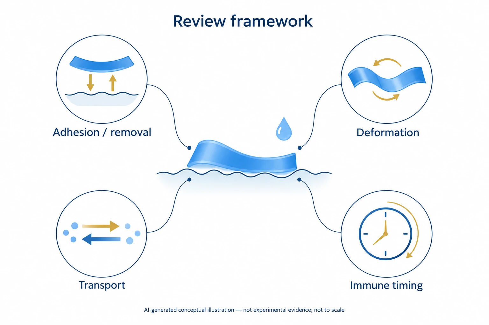

연구 개요
연세대학교 BLISS Lab(서정목 교수 연구실)이 작성한 이 종설은 생체접착 하이드로젤을 단순한 상처 덮개가 아니라 만성 상처의 면역·재생 반응을 조절하는 계면으로 다룹니다. 대식세포 분극, NF-κB·NLRP3·STAT 신호, 계면 기계신호전달 같은 기전을 네 가지 공학적 전략과 연결하며, 예를 들어 표로 정리한 지혈용 생체접착제의 습윤 접착 강도가 5.29–35.98 kPa에 걸쳐 있음을 제시합니다.
연구 배경
고령자와 당뇨 환자에게 흔한 만성 상처는 염증기가 길어지고 대식세포가 M1에서 M2 표현형으로 전환되지 못합니다. 종설은 이 정체를 호중구 세포외 덫, 최종당화산물, 수지상세포, Th17 세포, 노화 섬유아세포의 신호가 대식세포에 모이는 현상으로 설명하며, 삼출액, 생물막, 저산소, 비정상 pH, 단백분해효소 활성이 이를 지속시킨다고 봅니다. 거즈, 필름, 폼, 하이드로콜로이드, 알지네이트, 기존 하이드로젤 드레싱은 각각 한두 가지 수동적 기능에 머물고, 젖어 있고 불규칙하며 움직이는 상처 표면에서 들뜨거나 떨어지는 경우가 많습니다.
종설의 구성
종설은 면역 조절을 넓게 정의해 항산화·항균 작용 같은 간접 효과와 대식세포 분극·사이토카인 조절 같은 직접 효과를 함께 포함합니다. 임상 적용에 필요한 특성으로 습윤 접착과 밀착, 강인성과 피로 저항성, 부드럽고 수화된 구조, 생체적합성과 면역 관용, 투과성·수분 조절, 자극 반응성을 제시하고, 이를 당뇨발 궤양, 정맥성 하지 궤양, 욕창, 허혈성 상처 등 상처 유형과 치유 단계에 맞춰 선택적으로 조합해야 한다고 정리합니다. 하이드로젤 특성과 치유 반응을 잇는 후보 경로로는 NF-κB, STAT3/STAT6, Nrf2/HO-1, 인테그린–FAK, YAP/TAZ, Piezo1을 들었습니다.

AI 생성 개념도입니다. 만성 상처에서 하이드로겔의 접착·제거, 변형, 물질 전달, 면역 조절 시점을 연결하는 리뷰의 관점을 설명합니다. 형상과 비율은 설명용이며 재료 성능이나 임상 효과의 실험 근거가 아닙니다.
설계 개념을 설명하기 위해 이 자료실에서 생성한 개념도로, 논문 원그림이 아니며 측정 데이터를 나타내지 않습니다.
종설이 다룬 범위
종설은 문헌을 구조·보호형(차폐·밀봉, 삼출액 조절, 지혈, 냉각), 생리활성·재생형(미생물·세포 탑재형, 약물·성장인자·엑소좀·금속 이온 전달), 외부 자극 기반(전기 자극, 초음파, 근적외선·광 치료), 감지 통합형(온도, pH, 임피던스)으로 나누어 다룹니다. 표 1은 기존 드레싱 6종과 생체접착 면역 조절 하이드로젤을 비교하고, 표 2는 지혈용 생체접착제를 겔화 시간, 습윤 접착 강도, 면역 조절 결과, 동물 모델별로, 표 3은 자극 반응형 하이드로젤을 자극 조건과 상처 모델별로, 표 4는 감지 플랫폼을 감지 원리, 작동 안정성, 삼출액·생물오염 조건의 성능별로 정리했습니다.
종설의 주요 정리 내용
지혈용 생체접착제의 습윤 접착 강도는 5.29–35.98 kPa, 겔화 시간은 1.7초부터 1시간 동안 미리 경화하는 패치까지 분포하며, 종설은 적절한 겔화 속도가 전달 경로에 따라 달라진다고 정리합니다. 같은 1.7초 겔화 접착제가 쥐에서는 59초, 돼지에서는 약 2.1분 만에 지혈한 사례를 들어 동물 모델 간 수치 비교에 주의가 필요하다고 지적합니다. 또한 삼출이 많은 만성 상처는 하루 10 cm2당 0.5–1.0 ml의 삼출액을 내지만, 최적 팽윤 범위는 아직 정의되지 않았다고 밝힙니다.
외부 자극 기반 시스템으로는 전기 자극용 전도성 하이드로젤을 다루며, 분무 인쇄한 액체금속 패치에서 2 mA 직류를 하루 4시간 가했을 때 M1 표지자 CD86이 감소하고 CD206은 유지된 사례를 소개합니다. 초음파로 활성산소종을 만드는 압전 하이드로젤과 광 활성 하이드로젤도 정리했습니다. 전기 자극 플랫폼은 주로 비감염 모델에서, 초음파·광 치료 시스템은 감염된 화상·당뇨 모델에서 평가되었으므로 결과는 상처 유형 안에서 비교해야 한다고 봅니다.
감지 통합형 드레싱에 대해서는 감염 상처의 pH가 7.5 이상의 알칼리성으로 기울고, 온도와 임피던스가 염증과 장벽 회복을 반영한다고 정리합니다. 7일 단위의 기준선 표류, 감도 유지, 생물오염 평가는 드물게 보고되며, 생체 연구 대부분이 기준 측정법과의 보정이 아니라 상관관계만 보였다고 지적합니다.
임상 전환과 관련해서는 급성 설치류 모델에 대한 의존을 주요 한계로 꼽고, 질환 특이적·부목 고정 설치류 모델, 돼지 모델, 체외 인체 피부로 이어지는 단계적 검증을 제안합니다. 약물이나 생물학적 제제를 넣지 않은 하이드로젤 드레싱은 미국에서 Class I, 510(k) 면제 범주에 들 수 있지만 항균제, 생물학적 제제, 세포, 전자 부품을 포함하면 절차가 까다로워진다고 설명하며, 단기적으로는 내구성 있는 습윤 접착과 기전이 검증된 소수의 기능을 결합한 단순하고 확장 가능한 조성이 유리할 것으로 봅니다.
남은 과제
종설은 각 신호 경로의 상대적 기여를 신중하게 해석해야 하며, 경로 특이적 억제제, 녹다운, 리포터 시스템으로 인과 관계를 확인해야 한다고 밝힙니다. 습윤·동적 조건에서의 접착 지속성, 누출 없는 밀봉과 무손상 제거 사이의 상충, 전자 부품과 생체 구성요소의 장기 안전성, 멸균, 재현성, 제조 비용, 규제 분류를 남은 과제로 제시합니다.
함께 읽을 연구
Wireless, closed-loop, smart bandage with integrated sensors and stimulators for advanced wound care and accelerated healing
DOI: 10.1038/s41587-022-01528-3 ↗
감지, 자극, 분리 가능한 하이드로겔을 결합한 생쥐 시스템은 리뷰의 상태 적응형 설계를 보여 주는 사례입니다.
초록을 참고한 소개RESEARCH NEWS
연구 소식
해설에 사용한 자료
이 해설은 공개 종설(PMC13602266)의 본문 전체와 표 1을 바탕으로 하며, 표 2–4는 제목·열 항목과 이를 인용한 본문으로 확인했고 인용된 원 연구는 읽지 않았습니다.